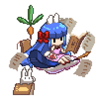

EVENT BOSS / INTERACTION PREVIEW
爆走饅頭兔
小兔委屈、嘲諷爆走、蒸氣蓄力與多人戳破的戰鬥介面測試。
兔王候選 · Lv.65 · 土屬性小兔形態
蒸氣爆發！
⚔✦➶✚

爆走饅頭兔4,800,000 / 4,800,000
高迴避 · 攻擊較溫和嘲諷 0 / 5
你 · 劍士 Lv.5012,000 / 12,000 HP
青葉 · 法師10,800 / 10,800 HP
白羽 · 弓手9,600 / 9,600 HP
小月 · 治癒師11,200 / 11,200 HP
選擇下方戰鬥操作，或用右側按鈕跳到指定機制。
候選強度與控制台
完整戰鬥畫面原型。操作只改變此頁的模擬資料，不會扣金幣或改動角色。
胡桃 · 目前正式Lv65 · HP 450 萬
STR 85 · AGI 90
DEF 50% · 固防 145
STR 85 · AGI 90
DEF 50% · 固防 145
兔王 · 測試候選Lv65 · HP 480 萬
STR 110 · AGI 90
DEF 55% · 固防 184
STR 110 · AGI 90
DEF 55% · 固防 184
兔王候選的破防 70%、VIT 124、DEX 101、INT 74、LUK 70，均不低於胡桃目前資料。攻防仍需正式戰鬥模型驗收。
協力打斷
每位參戰者每次詠唱只能戳一次。需求次數等於參戰人數，最多 5 次。
準備完成
先用按鈕體驗不同階段。
先用按鈕體驗不同階段。
事件紀錄
- 預覽已載入，兔王處於小兔形態。